一言でいうと: ごみを撮るだけで「飯田市での捨て方」が分かる、市民向け・無料の Android アプリ。
設計の肝: AI は「品目名」を当てるだけ。分別ルールは飯田市公式データ由来のアプリ内辞書から表示します（AIにルールを推測させない設計）。出典の詳細は別紙「データ出典・照合 説明資料」参照。
1. ホーム画面
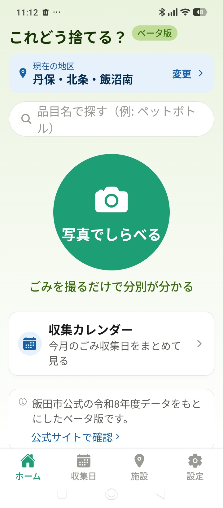
① ホーム — 地区・写真でしらべる・文字検索・収集カレンダー
- 上部に現在の地区を表示（タップで変更）。分別・収集日は地区ごとに異なるため、最初に地区を選びます。
- 中央がカメラ判定、上部が文字検索、下が収集カレンダー。
- 「ベータ版」「飯田市公式の令和8年度データをもとにしたベータ版／公式サイトで確認」を明示し、市公式アプリではないと分かる作り。
2. カメラで撮る
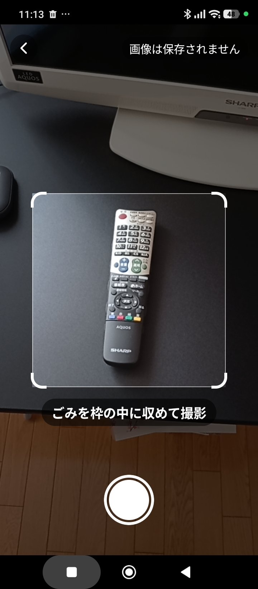
② 枠に収めて撮影。右上に「画像は保存されません」
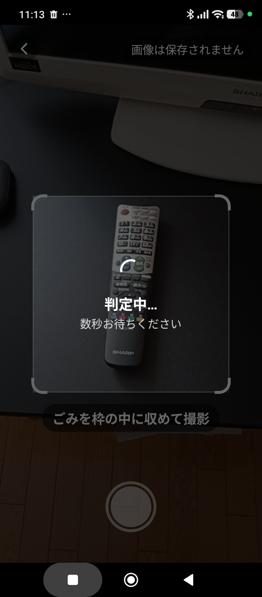
②' 撮影後「判定中…」（数秒）
- 品目を枠内に収めて撮影します。枠の外は判定対象から外します。
- 重要: 「画像は保存されません」と明記。撮影画像は判定後すぐ破棄し、サーバーにもログにも残しません（ログイン不要・個人情報の取得は最小）。
3. 判定結果（分別ルールの表示）
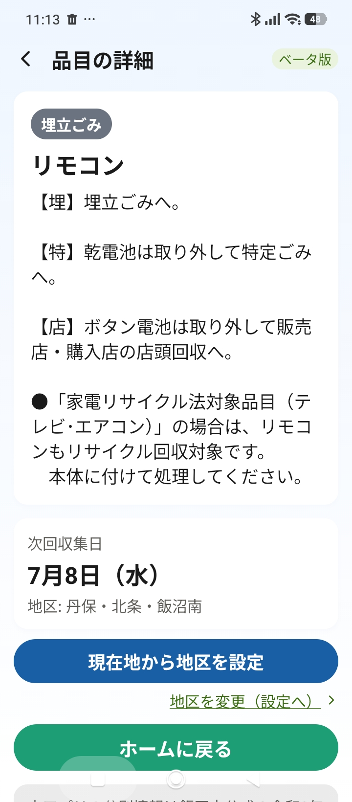
③ 結果（例: リモコン）— カテゴリ・出し方・次回収集日
- AI が特定した品目名（例「リモコン」）をもとに、アプリ内辞書から分別カテゴリ（埋立ごみ）・出し方の注意・次回収集日を表示。
- 表示する分別ルールは飯田市公式データ由来（品目＝さんあ〜る／収集日＝令和8年度計画表PDF）。AI が独自判断したものではありません。
- 「乾電池は取り外して特定ごみへ」等の部品ごとの出し方も公式データのまま表示。注意文中の電話・URLはタップ可。
4. 辞書に無いとき（未収録品目の報告）
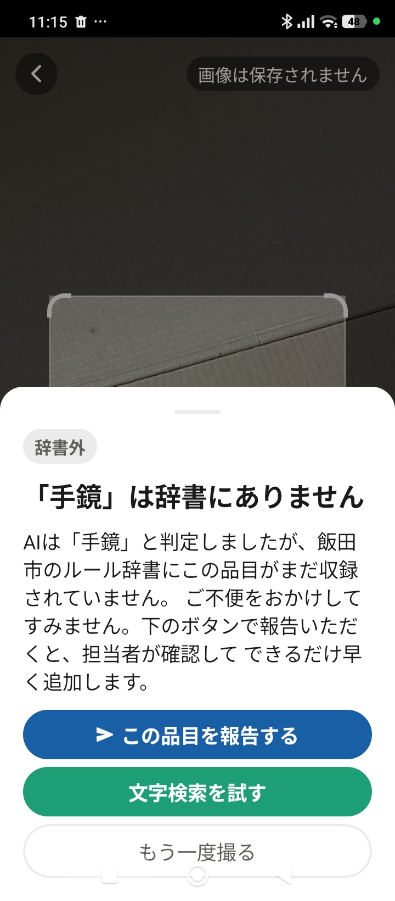
④ 辞書に無い品目（例: 手鏡）＋「この品目を報告する」
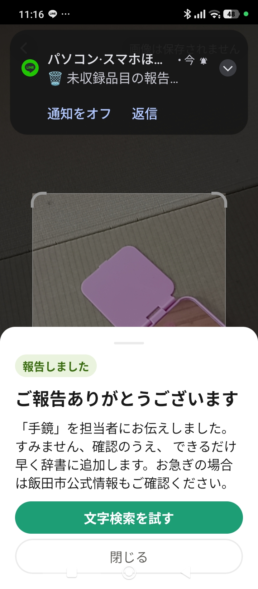
⑤ 報告後「ご報告ありがとうございます」（同時に通知が飛ぶ）
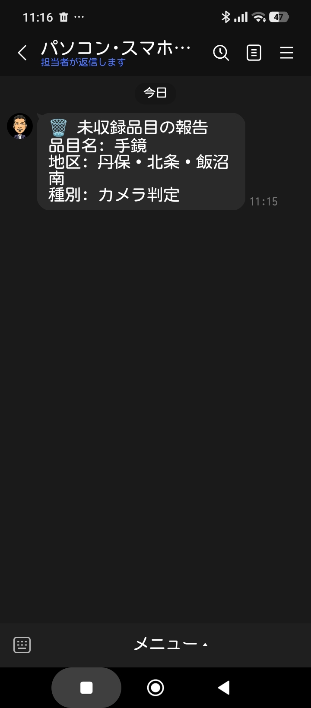
⑥ 運用側（開発者）に届く通知の例（LINE）
- 辞書（公式データ由来）に無い場合は正直に「辞書にありません」と表示（推測で誤案内しない）。
- 「この品目を報告する」を押すと品目名が運用側に届きます。送るのは品目名・地区名のテキストのみ。画像・位置情報・個人を特定する情報は送りません。押さない限り送信もしません。
- 市への価値: 集まると「市民が実際に困っている＝公式データに無い品目リスト」になり、市のデータ整備・問い合わせ削減に還元できます。
5. 文字検索
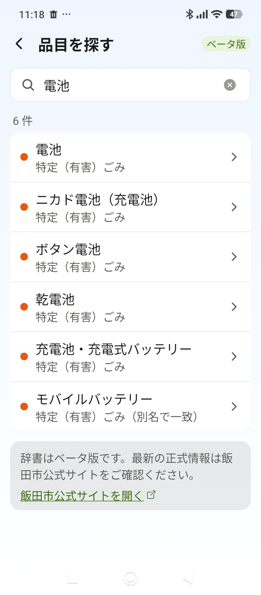
⑦ 文字検索（例:「電池」で6件）
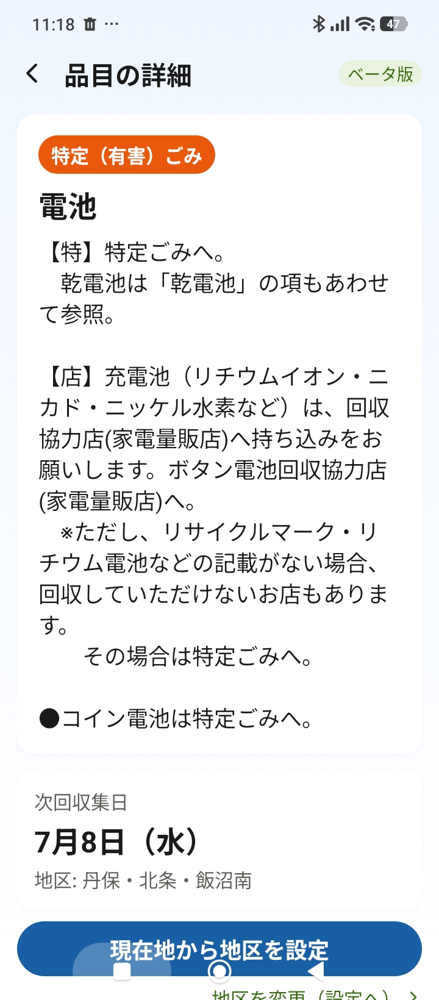
⑦' タップ → 品目の詳細（電池 → 特定(有害)ごみ）
- カメラを使わず品目名・別名で検索（ひらがな/カタカナ差も吸収。「モバイルバッテリー」のように別名で一致も表示）。
- ヒットをタップすると ③ と同じ結果画面へ。出典は品目辞書＝さんあ〜る。
6. 収集カレンダー
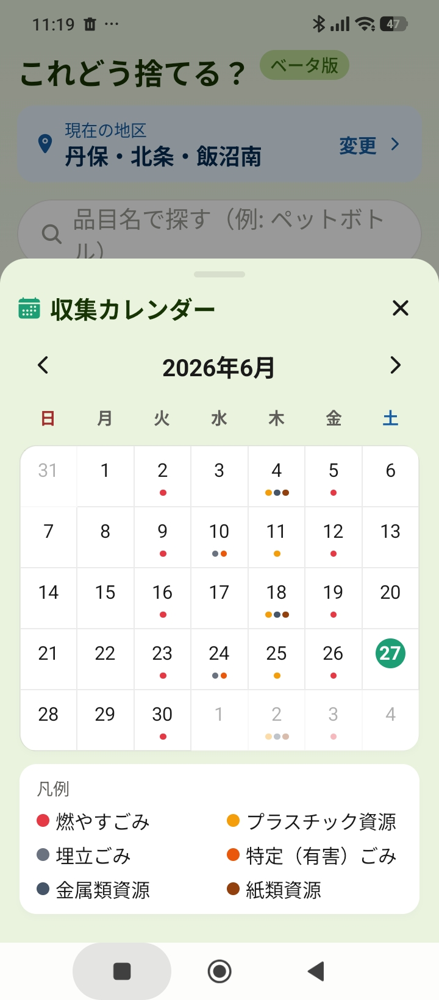
⑧ 収集カレンダー（ポップアップ）— 日曜始まり・色・凡例
- ホームのボタンから月カレンダーをポップアップ表示。収集日にカテゴリ色のドット（今日は緑の丸）。
- 日付タップでその日の収集内容を表示。出典は令和8年度計画表PDF（地区別）。
7. 収集日（一覧）
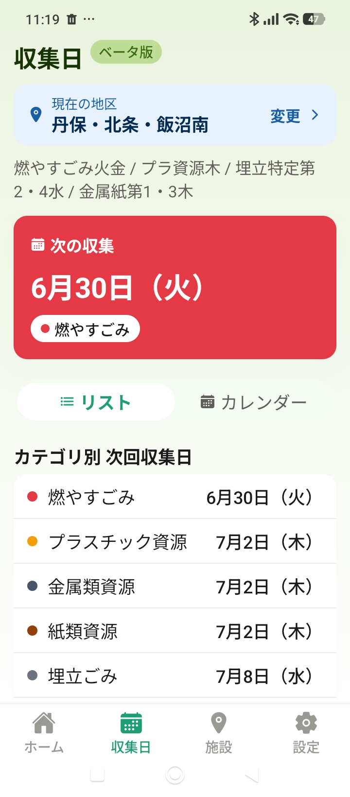
⑨ 収集日 — 次の収集・リスト/カレンダー切替・カテゴリ別
- 自分の地区の「次の収集」「カテゴリ別の次回収集日」「今後の予定」を表示。地区ごとの収集パターン（例「燃やすごみ火金 / プラ資源木 …」）も表示。
- 前日に「明日は○○の日」と知らせる通知も設定できます。
8. 施設・リサイクルステーション
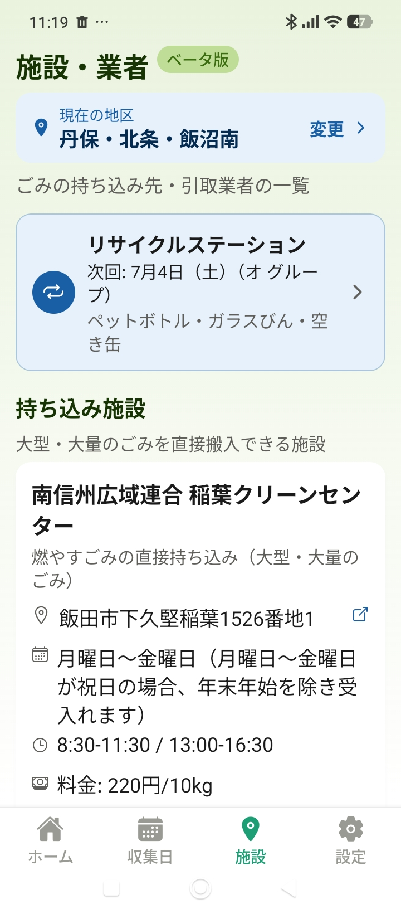
⑩ 施設・業者 — RS次回開催・持ち込み施設
- リサイクルステーションの次回開催日・受入品目、持ち込み施設（稲葉クリーンセンター等）の住所・営業日・時間・料金を表示。地図リンクも。
- 出典は令和8年度計画表PDF／ごみ出しガイドブック。
9. 設定・法務
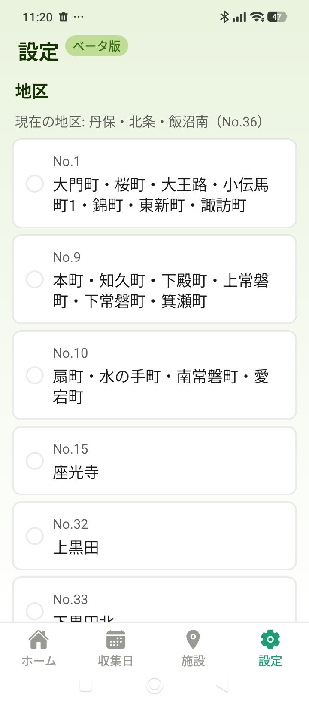
⑪ 設定 — 地区の選択
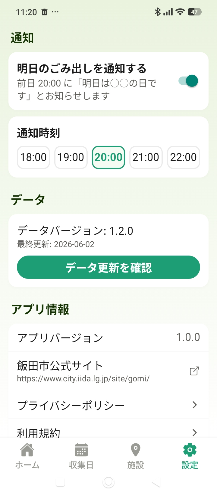
⑪' 通知・データ更新・プライバシーポリシー/利用規約
- 地区の変更、通知の ON/OFF・時刻、データ更新の確認（公式更新を再申請なしで反映）、プライバシーポリシー・利用規約を確認できます。
- プライバシーポリシーに、撮影画像を保存しないこと・報告機能が任意（ボタン押下時のみ・テキストのみ）であることを明記。
付録: データの出典まとめ（要点）
| 表示している情報 | 出典 |
|---|
| 品目→分別区分・出し方 | 飯田市公式「さんあ〜る」589品目（delight-system） |
| 収集日・収集パターン | 飯田市 分別収集計画表 令和8年度（PDF・10区） |
| 施設・リサイクルステーション・基本ルール | 同 計画表PDF／ごみ出しガイドブック |
| 画像→品目名 | Google Gemini（品目名の特定のみ。ルールには関与しない） |
詳細は別紙「データ出典・照合 説明資料」（data-provenance）。